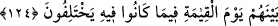

CUMARTESİ TÂTİLİ
124. Cumartesi tatili, ancak onda ihtilaf edenlere (farz) kılınmıştı. Kıyamet günü
Rabbin, muhakkak onların ihtilafa düştükleri şey hakkında aralarında hüküm
verecektir.
“Cumartesi tatili,” Cumartesi gününe tâzim ve o günde balık avını bırakıp ibadetle
meşgul olma “ancak onda ihtilaf edenlere (farz) kılınmıştı.”
“Cumartesi” haftanın günlerinden bir gün olup başka şeylerden kesilmek ve istirahat
etmek anlamlarına gelir. Bu şekilde isimlendirilmesinin sebebi de günler “cumartesi”
ile bittiği ve son bulduğu içindir. Çünkü o, haftanın son günüdür. Allah o günde gökleri
ve yeri yaratmayı tamamlamıştır. Ya da bu yahudilerin o günde dünya işlerini bırakıp
dinlenmeleri sebebiyledir. Yahudiler Cumartesi gününün İslam’ın alâmetlerinden
olduğunu, İbrahim (a.s.)’ın da ona riâyet ettiğini iddia ederlerdi. Buna göre âyetin
mânâsı, “Ey Muhammed! Cumartesi günü senin uymakla emrolunduğun İbrahim (a.s.)’ın
dîninin alâmetlerinden değildir ki senin ile bazı müşrikler arasında genel olarak bir
münasebet meydana gelmiş olsun. Çünkü Cumartesi günü, İsrailoğulları için uzun bir
zamandan sonra meşrû kılındı.
Kâşifî der ki: “Zâdü’l-mesîr’de şöyle rivâyet edilir: Cumartesi günü Hz. Musa (a.s.)
bir kimsenin bir eşyayı kaldırıp bir yere götürdüğünü gördü. Onun boynunun
vurulmasını ve bedeninin bir yere bırakılmasını, leş yiyen kuşların o adamın parçalarını
ve iç organlarını yemesini emretti.” Musa (a.s.) böyle bir amelde şeriatının hurmetini
çiğnediği için ona bu cezayı vermiştir.
Şer‘-i şerif kimin helâkine fetvâ verirse
Onun katl ve helâkinden hiç çekinme
Cumartesi gününde ihtilafın kaynağı, hakka muhalif olan taraftı. Şöyle ki Musa (a.s.)
yahudilere haftanın günlerinden birinin ibadet için ayırmalarını ve bu günün de Cuma
günü olmasını emretti. Pek azı Cuma gününe rıza gösterdi ve çoğu şöyle dedi: “Biz,
Allah’ın gökleri ve yeri yaratmayı tamamladığı günü, yâni Cumartesi gününü istiyoruz.”
dediler. Allah onlara Cumartesi günü için izin verdi ve o günde balık avını
yasaklayarak onları imtihan etti. Cuma gününe razı olanlar Allah’ın emrine itaat edip o
günde avlanmadılar. Diğerleri ise balık avına sabredemediler. Bunun üzerine Allah,
emrine itaat edenlerin dışında bütün yahudileri maymun şekline çevirdi.
Fakir (Bursevî) der ki: Emre uyan grup, Allah Teâlâ’nın emrine boyun eğdiği için